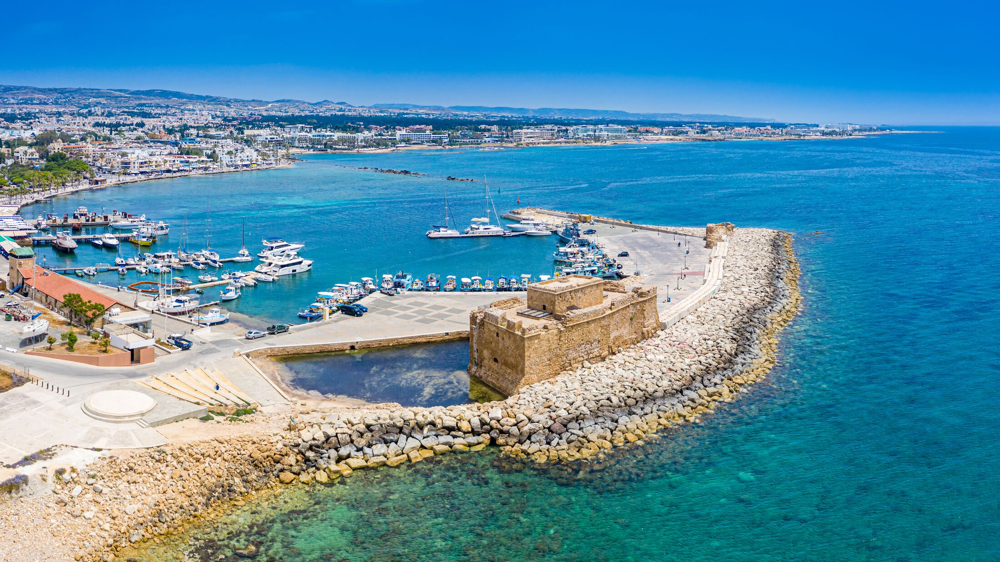

ЛЕТНА ПОНУДА

ПРЕПОРАЧАНА ПОНУДА
Пафос, Кипар
21.08 - 28.08
Уживајте во прекрасниот остров Кипар, со сончеви денови, кристално чисто море и прекрасни медитерански пејзажи. Хотелот е идеален за мирен одмор покрај морето, со удобни соби и пријатна атмосфера.
Историски крајбрежен град на Кипар, познат по своето богато археолошко наследство и прекрасното море. Меѓу главните знаменитости се Археолошкиот парк со познатите антички мозаици, старото пристаниште и средновековниот замок. Пафос е идеален за прошетка покрај морето, разгледување, фотографирање и уживање во локалната атмосфера.
Еден од познатите крајбрежни градови на Кипар, познат по своето шеталиште Finikoudes, марината и прекрасната медитеранска атмосфера. Меѓу позначајните знаменитости е црквата Св. Лазар, додека соленото езеро претставува една од природните атракции на градот. Ларнака нуди одлична комбинација од историја, море, прошетки, кафулиња и ресторани.
Познато по прекрасните медитерански пејзажи, чистото сино море и живописните крајбрежни места. Областа нуди идеални услови за капење, сончање, релаксација и прошетки покрај морето. Посетителите можат да уживаат и во локалните кафулиња и ресторани со прекрасен поглед кон Средоземното Море.
Еден од најпознатите крајбрежни градови на Кипар, познат по својата модерна атмосфера, долгото шеталиште и историскиот стар град. Меѓу позначајните места се Molos, средновековниот замок и централниот дел со бројни продавници, кафулиња и ресторани. Градот нуди одлична комбинација од историја, море, шопинг и пријатни прошетки покрај крајбрежјето.
Состанок со групата на аеродром во Скопје, 2 часа пред летот. Следува директен лет до Пафос и пристигнување на аеродромот. По завршувањето на аеродромските процедури следува организиран трансфер до хотелот и сместување. По сместувањето следува време за одмор и освежување. Попладнето е предвидено за прва прошетка низ околината и запознавање со местото. Вечерта е слободна за вечера и индивидуални активности. Ноќевање во хотел.
Појадок во хотелот и организирана прошетка низ Ларнака. Следува посета на црквата Св. Лазар, шеталиштето Finikoudes и марината. Потоа следува разгледување на соленото езеро и слободно време за кафе, ручек и фотографирање. Во попладневните часови е предвидено слободно време за индивидуално истражување и уживање покрај морето. Вечерта е слободна за прошетка и одмор. Ноќевање во хотел.
Појадок во хотелот и организирано тргнување кон Пафос. Следува прошетка низ старото пристаниште и посета на Археолошкиот парк со познатите мозаици. Потоа следува разгледување на средновековниот замок и крајбрежниот дел. Патниците ќе имаат слободно време за кафе, ручек, фотографирање и индивидуално истражување. Во попладневните часови следува организирано враќање во Ларнака. Вечерта е слободна. Ноќевање во хотел.
Појадок во хотелот и организирано тргнување кон крајбрежниот дел на Кипар. Следува прошетка покрај морето и време за уживање во прекрасните медитерански пејзажи. Предвидено е слободно време за капење, сончање, кафе и ручек покрај море. Попладнето продолжува со одмор и фотографирање покрај крајбрежјето, по што следува организирано враќање во Ларнака. Вечерта е слободна за прошетка и одмор. Ноќевање во хотел.
Појадок во хотелот и организирано тргнување кон Лимасол. Следува прошетка покрај познатото шеталиште Molos и разгледување на стариот град. Потоа следува посета на средновековниот замок во Лимасол и слободно време во централниот дел. Патниците ќе имаат време за кафе, ручек, шопинг и фотографирање. Во попладневните часови следува прошетка покрај морето и организирано враќање во Ларнака. Вечерта е слободна за индивидуални активности. Ноќевање во хотел.
Појадок во хотелот и организирано тргнување кон Аја Напа. Следува прошетка низ центарот и посета на манастирот Аја Напа и познатиот Sculpture Park. Потоа следува посета на крајбрежниот дел и прекрасните погледи кон Средоземното Море. Патниците ќе имаат слободно време за кафе, ручек, фотографирање и индивидуално разгледување. Попладнето е предвидено за одмор и уживање покрај морето. Во договореното време следува враќање во Ларнака. Вечерта е слободна. Ноќевање во хотел.
Појадок во хотелот и одјавување согласно предвиденото време. По собирањето на багажот следува организиран трансфер од Ларнака до аеродромот. По пристигнувањето следува пријавување за летот и завршување на потребните аеродромски процедури. Потоа следува лет назад кон Скопје. По пристигнувањето и преземањето на багажот завршува организираното патување.